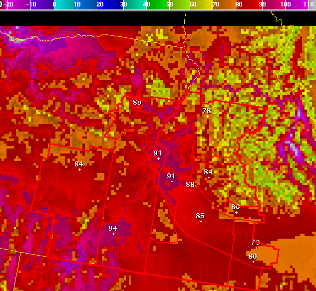

LimitValues
Introduction
Sometimes it is desirable to “clip”
grid values to particular limits. For example, you might not want temperatures to cross some
important threshold such as 32 or 100. There are a variety of tools you might use that would
allow you to raise/lower values over a region such that the values do not cross these thresholds.
However, depending on the color curve, it may be difficult to see if any pixels reach these
values, and using other tools might inadvertently change other pixels that you want to remain
constant.
The Limit_Values tool clips grid values at limits that you specify. It is purely an “editing”
tool, with no meteorological “theory” behind it - it is simply a quick way to accomplish a
common editing task. It is similar to the “NoHigherThan” and “NoLowerThan” tools by Thomas
Mazza, but it combines the two tools in one, and when you start the tool, the slider shows
the current value - which makes modifications easier.
How
the Procedure Works
Lets say we start with a complex temperature pattern like this:

Lets say that for some reason, we do
not believe any of the locations near the center of the screen will be in the 90s. There are
quite a few non-contiguous pixels above 90, so it will be difficult to remove them without also
editing other nearby points. For some reason, lets say that we just want to set the temperature
to 89 in those areas. We could create a complex query of edit areas, areas where temperatures
are above 89, etc. and then use the Assign_Value tool to assign 89 to those points. That
approach is complex and takes many steps.
With the Limit_Values tool, we simply draw a general edit area that covers the points in
question:
Then we call the Limit_Values tool
and a dialog box comes up with the current max/min values in the current edit area:
Now we can see that some pixel in
the edit area was 96 (which is difficult to tell with the color curve we are using)! Now we
simply set the maximum value to 89:
And when we click on OK, all the pixels above 89 in the edit area are set to 89:
You can limit the minimum value on the grid in a similar way. You can certainly run the tool
without defining an edit area, in which case it acts upon the entire grid.